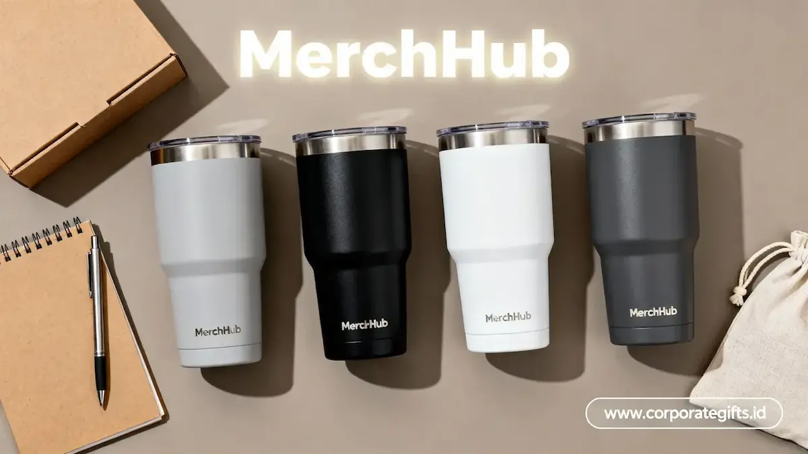

Corporate Gifts ID - Tumbler custom stainless adalah wadah minum berbahan stainless steel food grade yang dicetak dengan logo, nama brand, atau tagline perusahaan, digunakan sebagai media branding harian sekaligus gift set untuk klien dan karyawan.
Produk ini menjadi merchandise korporat pilihan utama di tahun 2026 karena daya pakai tinggi, tampilan premium, dan keselarasan dengan target sustainability perusahaan. Dalam aktivitas kerja modern yang dinamis, menghadirkan souvenir kantor fungsional seperti tumbler stainless steel memberikan dampak impresi merek berulang setiap harinya.
Poin Kunci Memilih Tumbler Stainless Korporat 2026:
- Dukungan Target ESG & Keberlanjutan: Mengurangi ketergantungan pada botol plastik sekali pakai di lingkungan kerja.
- Frekuensi Impresi Tinggi: Dipakai berulang kali di meja kantor, meeting, hingga perjalanan komuter harian.
- Daya Tahan Material SUS 304: Menjamin keamanan konsumsi (BPA free) serta ketahanan suhu panas dan dingin 8 hingga 12 jam.
- Sentuhan Branding Presisi: Teknik laser engraving dan UV print tahan gores yang memperkuat citra profesional brand.
Pengertian Tumbler Custom Stainless Steel untuk Perusahaan
Tumbler custom stainless adalah wadah minuman berinsulasi termal yang dirancang khusus dengan grafir atau sablon identitas visual korporasi. Produk ini termasuk dalam kategori merchandise fungsional bernilai guna tinggi.
Tim HRD, Marketing Communication, dan panitia pengadaan procurement umumnya memilih tumbler berbahan logam tahan karat ini untuk memenuhi berbagai kebutuhan cinderamata seperti paket onboarding welcome kit, seminar eksekutif, hingga bingkisan tahunan bagi mitra B2B strategis.
Alasan Tumbler Stainless Jadi Prioritas Merchandise 2026
Pergeseran tren cinderamata korporat menuju produk ramah lingkungan dan fungsional menjadikan tumbler stainless steel pilihan teratas:
1. Mendukung Program Environmental, Social, and Governance (ESG)
Membagikan botol minum berkualitas mendorong karyawan dan peserta event untuk mengurangi sampah plastik sekali pakai. Inisiatif ini dapat didokumentasikan dalam laporan keberlanjutan tahunan institusi.
2. Efisiensi Biaya per Impresi Branding (Cost-Per-Impression)
Dibandingkan dengan brosur atau flyer yang cepat dibuang, sebuah tumbler stainless dengan cetakan logo presisi akan terlihat puluhan kali dalam sehari oleh pengguna maupun rekan di sekitarnya selama bertahun-tahun.
3. Nuansa Mewah dan Prestisius untuk Level Eksekutif
Finishing matte, lapisan serbuk anti-slip (powder coating), dan kilau logam baja tahan karat menghadirkan kesan mewah yang sangat pantas diberikan kepada jajaran direksi, komisaris, maupun tamu kenegaraan.

Aneka pilihan model tumbler: tipe slim travel, handle ringkas, dan smart digital thermos berlayar LED.
5 Jenis Tumbler Stainless untuk Kebutuhan Korporat
Terdapat 5 jenis tumbler stainless steel yang dapat disesuaikan dengan segmentasi penerima dan agenda acara:
Tabel Komparasi Jenis Tumbler Stainless, Karakteristik, dan Target Audiens
Gunakan tabel acuan berikut untuk menentukan jenis tumbler yang paling selaras dengan segmentasi anggaran dan penerima:
| Jenis Tumbler | Karakteristik Utama Material | Daya Tahan Suhu | Segmen Penerima yang Cocok |
|---|---|---|---|
| Double Wall Insulated | Dinding ganda kedap udara, anti-kondensasi di luar | 6 - 8 Jam Panas / Dingin | Karyawan kantor harian, peserta seminar |
| Vacuum Flask Premium | Lapisan tembaga internal, food grade SUS 304/316 | 10 - 18 Jam Panas / Dingin | Klien VIP, gift set eksklusif, direksi |
| Slim Travel Flask | Diameter ramping, pas di cup holder mobil & tas ransel | 6 - 10 Jam Panas / Dingin | Karyawan muda, komuter, event hybrid |
| Sport Stainless Bottle | Bodi kokoh tahan benturan, tutup carabiner aktif | 4 - 6 Jam (Single/Double Wall) | Gathering outdoor, CSR, event olahraga kantor |
| Handle / Flip Top Lid | Pegangan ergonomis, sistem tutup satu sentuhan anti-tumpah | 8 - 12 Jam Panas / Dingin | Tim lapangan, profesional mobilitas tinggi |
Metode Kustomisasi Branding: Grafir Laser, UV Print, dan QR Code
Keindahan hasil akhir cinderamata ditentukan oleh pemilihan teknik cetak:
- Laser Engraving (Grafir): Mengikis lapisan cat luar secara presisi dengan sinar laser, memunculkan warna dasar logam perak yang abadi dan anti-luntur selamanya.
- Digital UV Flatbed Printing: Mengaplikasikan tinta warna-warni beresolusi tinggi dengan teknologi pengeringan sinar ultraviolet, cocok untuk logo korporat dengan banyak warna atau gradasi.
- Personalisasi Nama Individu: Menambahkan nama penerima pada setiap unit produk untuk memberikan rasa eksklusivitas personal yang tinggi.
- Integrasi QR Code Interaktif: Menyematkan kode QR grafir yang dapat dipindai langsung ke laman website resmi, company profile digital, atau landing page promo korporasi.
Aplikasi Penggunaan Tumbler Custom dalam Kegiatan Perusahaan
Tumbler custom stainless steel sangat fleksibel digunakan dalam berbagai momen penting institusi:
- Paket Gift Set Akhir Tahun: Dikombinasikan bersama notebook kulit dan pulpen metal dalam kemasan hardbox berpita mewah.
- Onboarding Welcome Kit: Menyambut talenta baru pada hari pertama bekerja untuk membangun ikatan emosional tim.
- Merchandise Seminar & Konferensi: Menjadi souvenir bernilai guna tinggi yang membuat acara seminar lebih berkelas.
- Cinderamata Penghargaan Masa Kerja (Milestone): Diberikan sebagai reward apresiasi dedikasi tahunan staf.
Faktor Teknis Penting Sebelum Memesan Tumbler Custom
Pastikan Anda memperhatikan aspek teknis berikut sebelum melakukan pengadaan massal:
- Sertifikasi Food Grade & BPA Free: Pastikan material bebas racun dan tidak merubah rasa air minum.
- Kapasitas yang Proporsional: Ukuran 350 - 450 ml sangat ideal untuk meja kerja, sedangkan 500 - 750 ml cocok untuk mobilitas luar ruangan.
- Kualitas Seal Karet Silikon: Uji tutup botol untuk memastikan cairan tidak bocor saat tumbler dimasukkan ke dalam tas kerja.
Pertanyaan Seputar Tumbler Custom Stainless Perusahaan (FAQ)
Kesimpulan dan Konsultasi Tumbler Perusahaan Bersama Corporate Gifts ID
Mengintegrasikan tumbler custom stainless steel ke dalam program pengadaan merchandise perusahaan 2026 adalah langkah strategis untuk memperkuat reputasi brand, menjaga retensi talenta, serta menunjukkan komitmen nyata terhadap kelestarian lingkungan.
Corporate Gifts ID siap menyediakan ribuan model tumbler berkualitas food grade dengan teknologi cetak laser presisi tinggi. Kunjungi katalog merchandise kami atau diskusikan kebutuhan souvenir korporat Anda bersama tim spesialis kami hari ini.